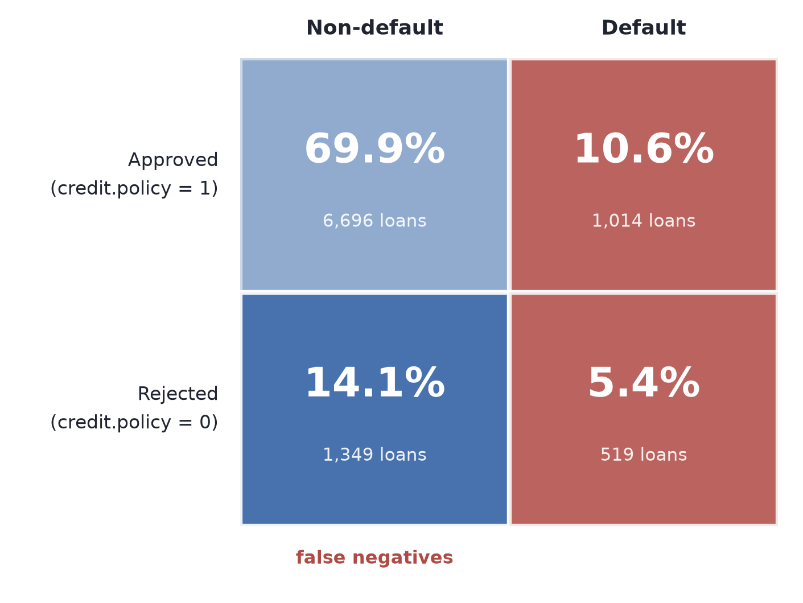
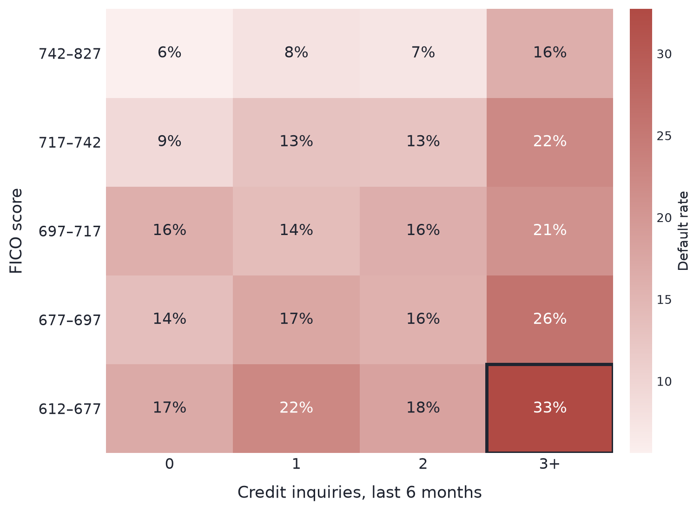
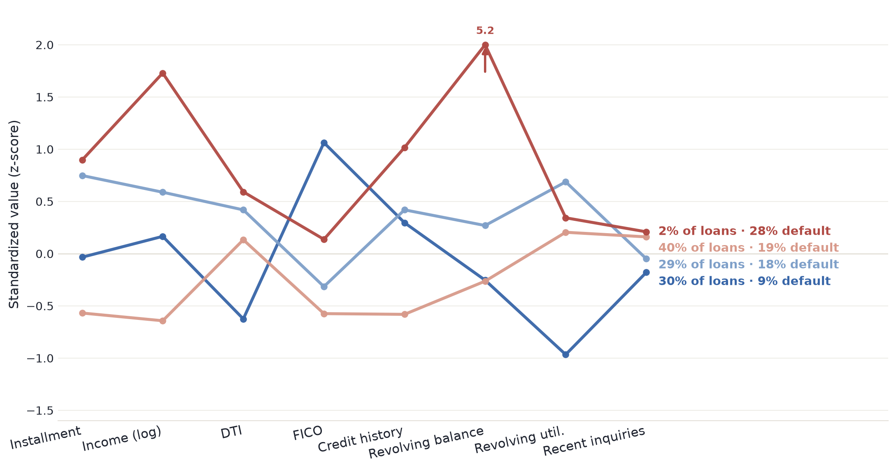

Three executives, one shared problem: which loans should we trust — and at what price?
CEO
ROIC
CFO
Interest profit
CMO
Market share
The business
Three goals, two levers
Update 1 asks: are these two levers currently calibrated correctly?
The data
One row, one funded loan
9,578 loans · 16.0% defaulted · no missing data · funded 2007–2010
Any predictive model we build next must use only the left-hand fields.
Lever 1 — Policy
Are we rejecting the right people?

Rejected loans (credit.policy = 0) still default at 2.1× the rate of approved loans — but 72% of them would have paid in full. That's 14.1% of the entire applicant base — good borrowers turned away by a blunt rule.
Lever 2 — Pricing
Are riskier segments priced up?

Even top-tier borrowers (FICO 742+) go from 5.6% to 16.3% default with 3+ recent credit inquiries — a risk signal that pricing (set mostly from FICO) doesn't fully capture.
Validating the segments
Two methods, the same borrower map

K-means and PCA independently converge on the same borrower archetypes — including a small, high-income "jumbo revolver" segment (2% of loans) that defaults most of all, yet isn't priced accordingly.
So what
Two gaps, one next step
Policy gap
14.1% of applicants wrongly rejected
+
Pricing gap
Inquiry risk under-priced
+
Validated segments
4 archetypes, 2 methods agree
→ Update 2: a predictive model and a data-driven threshold